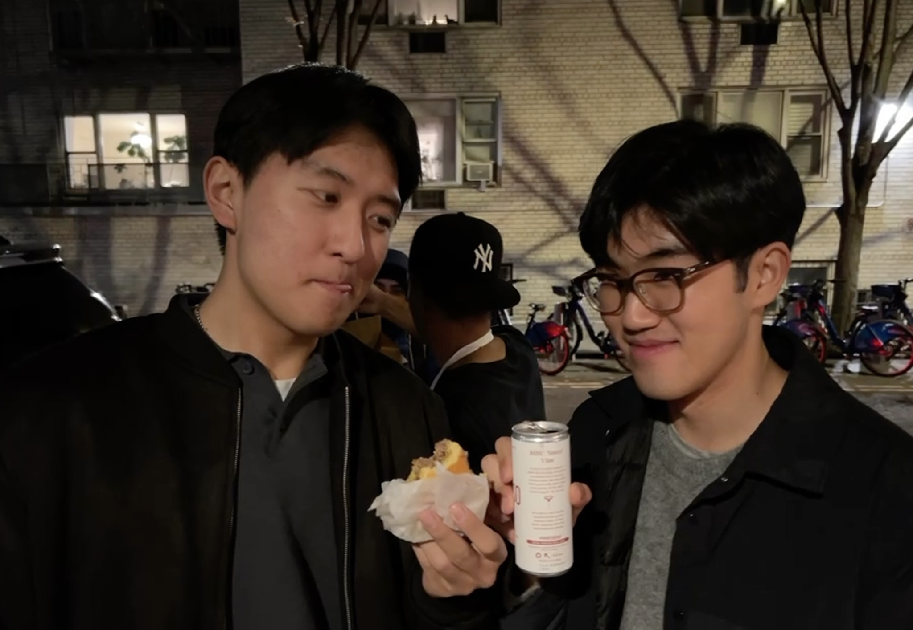

About
- i like developing ci/cd pipelines and studying stochastic optimization
- in my free time, i like working out and also love playing basketball(near-daily) and play for the hopkins intramural league
- i also take photos, which you can check out on the photography tab
- if you're a foodie, check out some of my favorite restaurants on my beli
- i also make my own keyboards, and if you want to get plate jsons feel free to contact me from the contact tab
